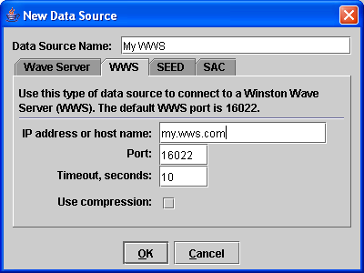

After starting Swarm you will see a panel similar to this on the left side of the Swarm screen. This is the Data Source Chooser and Channel Selector. You can adjust the size of the two panels by adjusting the split line in the center, either by dragging with your mouse or clicking on one of the small arrows.
The Data Source Chooser, the top half of the panel, is used to select the source of the waveform or helicorder data. The box contains the list of all available data sources, both ones you have used before and new ones that you create. To choose a data source, select it and press the 'Go' button, or simply double-click on the data source. To create new data source, press the 'New' button; read below for explanations of the different data sources. You can also edit an existing data source be clicking on the 'Edit' button. Finally, if there is a data source you no longer need you can remove it with the 'Remove' button.
The Channel Selector, the bottom half of the panel, is used to select a channel, either the waveform or the helicorder. Once you have selected a data source the Channel Selector will be populated with the available channels. The contents of both the Waves and Helicorders lists depends on the data available from the selected data source.
Each of the channels lists is shown in a tree view. All of the channels are displayed under the 'All' folder. Double-click on a the 'All' folder for a complete list of stations. Often it is convenient to groups stations by a common theme or geographical location (in the image above the channels are grouped by volcano). See the Advanced Topics section for how to set up these channel groupings.
If the Waves tab is selected in the Channel Selector then a wave can be opened into one of two places: a real-time wave viewer frame or onto the Wave Clipboard. Select the appropriate button to open the wave accordingly. Also, double-clicking on a channel will open it into a real-time wave viewer frame.
If the Helicorders tab is selected that you can open a helicorder by double-clicking on a channel or clicking the View Helicorder button.
You can also open more than one channel at a time. Simply select multiple channels (with Control- or Shift-click on Windows) or an entire folder in the Channel Selector then press the appropriate button (Realtime, Clipboard, or View Helicorder).
Swarm can currently get data from a few different places, described below.
To connect to an Earthworm Wave Server (technically, the wave_serverV module of the USGS Earthworm system) you need to create a new data source. Click on the New button on the Data Source Chooser. A window similar to the one below will appear.

You need to specify a unique name for the data source (which is then displayed in the Data Source Chooser), the Wave Server host name or IP address, and the port number.
An Earthworm Wave Server data source will populate both the Waves and Helicorder lists of the Channel Selector. Some clarification about how this works is in order. An Earthworm Wave Server actually only provides raw wave data, not derived helicorder data. When you choose a helicorder view based on Earthworm Wave Server data, Swarm starts a process called a Gulper that slowly downloads data to fill in the requested helicorder time interval. This process will take several minutes. One positive side effect of this process is that the raw wave data will be immediately available for viewing and analysis from the Swarm cache.
Winston Servers are another data source for Swarm. Winston Servers store both derived helicorder data and raw wave data. Winston is still under heavy development at the Alaska Volcano Observatory so is not available to non-AVO users at this time.